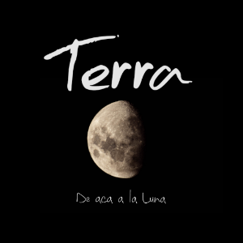

APROPIARSE
Lista de Canciones


Lluvia no te apagues
Déjame escuchar
Dulce voz que apura al sueño que venga a buscar
Otra gota de luz que se queda atrás
Rituales salvajes
Consumiendo el aire
Fuego que no quema pero es parte del lugar
Que en dos partes se cultiva y arderá
Porque se que un beso no es de nadie
Pero acá me lo quiero apropiar
Porque se que nunca es bueno esto de atarse
Pero hay pieles que no se quieren soltar
Que el mundo se apague
Que deje escuchar
Luces transparentes que se acercan a llevar
Mi pasado que se empeña en regresar
Sangre que se bate
Hierve al conectar
Con la yema de tus dedos puedo rebalsar
La locura envidia el tacto que hay acá
Porque se que un beso no es de nadie
Pero acá me lo quiero apropiar
Porque se que nunca es bueno esto de atarse
Pero hay pieles que no se quieren soltar
Las heridas cantan con los años
La experiencia afina en el pasar
No pretendo errar mas con tu mano
Y el silencio alivia todo lo demás
Ho... Todo lo demás
Ho... Todo lo demás
La locura envidia el tacto que hay acá
Y el silencio alivia todo lo demás
Pero hay pieles que no se pueden soltar